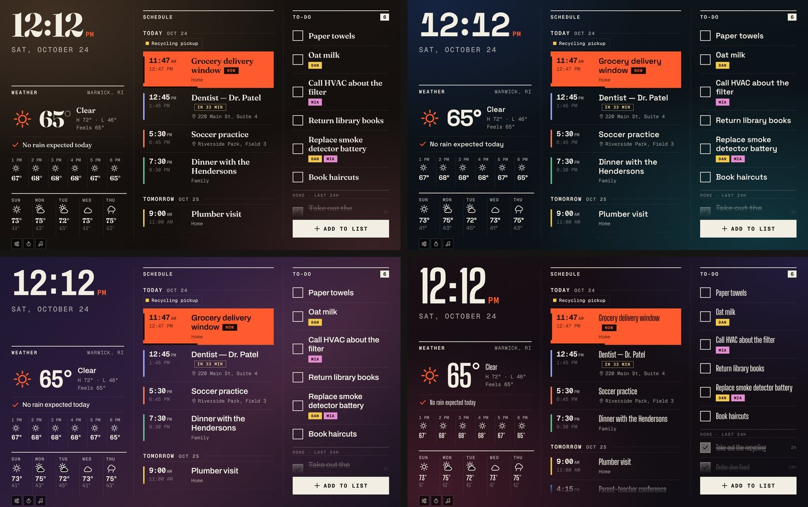
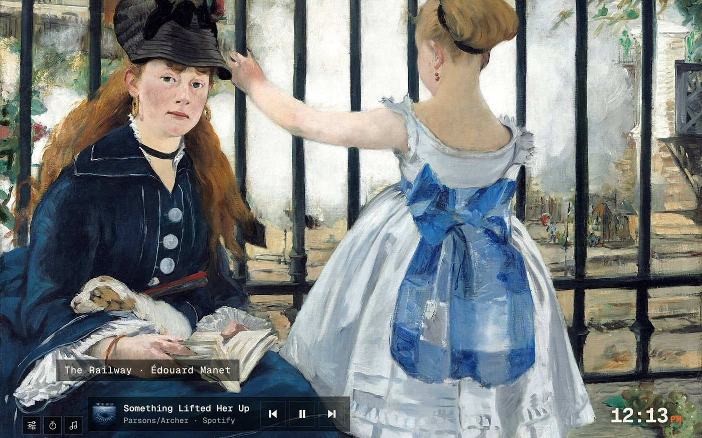

Clock and weather
A big clock you can read from the stove, the next hours and the week ahead, and a simple line on whether it’ll rain.
Android tablets now · iPad coming
Your calendar, to-do list, shopping list, weather, timers and music, always on in the kitchen and editable from anywhere. It’s not the last century. Retire the whiteboard.
Free forever. One optional upgrade, $14.99 once. An iPad version is on the way.


Instead of sticky notes
Today’s schedule, the to-do list, the shopping list and the weather, all in one place on the wall, and everyone in the house can add to it from anywhere. Finally.
Any Android tablet will do: a cheap new one, or the one that’s been in a drawer since 2019. Skreen doesn’t sell hardware, so there’s nothing to buy from us.
Connect the Google account you already use. Your calendar appears on the screen, and your to-do list syncs with Google Tasks. No new account to create.
Tap Add to list to put a to-do on the wall, and say who it’s for so it can be assigned. Events and to-dos you add from your phone or laptop show up there too.
Free, forever
An always-on clock, weather, calendar and to-do list. Plus the two things people use their smart displays for most: a timer and music.
A big clock you can read from the stove, the next hours and the week ahead, and a simple line on whether it’ll rain.
Google Calendar, plus Outlook, Apple or any calendar link. Today and tomorrow at a glance, with what’s on right now lit up.
Your to-do list, right on the wall. Tap to check things off, add new ones by typing or talking, and tag who each one is for. It syncs with Google Tasks, so it’s on your phone too.
Up to four named timers, set with a keypad or your voice. When one’s done the whole screen turns orange and rings.
See what’s playing from your favorite music apps and pause, play or skip from the wall.
Stations from around the world, any genre you can think of, searched and played right in Skreen. No other app needed.


Nine soft backgrounds and five typefaces. Pick a favorite, or let Skreen change the background every day.

Other home screens come with a device and a price tag to match. Skreen is just the software. Run it on a tablet you already own or a cheap one off the shelf, and keep your money.
Skreen+
One payment unlocks everything below, and it’s yours for good. More customizable than the big names, because you choose what goes on the wall.


Skreen+ · Big Skreen Mode
Turn it on and Skreen cycles through the widgets you choose, one big bold slide at a time. The time, the weather, your timers and a music player with controls stay in view on every slide. You pick how long each slide stays.



Skreen has no accounts of its own. It talks straight to the Google account you already use, and your calendar and lists aren’t stored on any server of ours. Only your tablet holds them. No ads, no tracking, nothing sold. Read the privacy policy.
An always-on screen deserves some care. Skreen shows a useful, rotating slideshow at an interval you control, nudges the layout slightly through the day, and dims to a quiet night mode. Your tablet’s screen stays healthy for years.
An Android tablet with Google Play (Android 8 or newer) and a Google account. Amazon Fire tablets don’t work, because they don’t have Google’s sign-in. Leave it plugged in and it’s a wall display.
Yes. The clock, weather, calendar, to-do list, timers, music controls and radio are free, with no ads. Skreen+ is an optional one-time purchase of $14.99 (launch price) that adds the extras above. There’s no subscription.
To-dos: right on the screen. Tap Add to list, type or speak, and say who it’s for. They sync with Google Tasks, so you can also add or tick them off from your phone. Events: add them to your calendar the way you already do. New items appear within a few minutes (you can choose how often Skreen checks), or tap the heading on the screen to check right away.
It does the screen part, and does it bigger: clock, weather, calendar, lists, timers, music, radio and news. It isn’t a voice assistant, doesn’t control smart-home devices and doesn’t do video calls.
Skreen shows what any music app on the tablet is playing, such as Spotify or YouTube Music, with play, pause and skip, once you allow it in Android’s settings. Radio is built into Skreen and needs no other app.
It keeps showing the last calendar and lists it had, and the clock keeps running. Weather, radio and updates need the internet.
An iPad version is coming. For now Skreen runs on Android tablets. iPhone owners can already add events through their calendar app, and to-dos through Google Tasks.
Purchases go through Google Play, so Google Play’s refund rules apply.